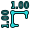

Snapping bedeutet das "Rasten" des nächsten 3D-Punktes auf einen bereits existierenden Punkt. Diese Möglichkeit ist bei den meisten Draft- und Architektur-Werkzeugen gegeben und kann mit dem Draft_ToggleSnap-Kommando global ein- oder ausgeschaltet werden. Jede der unten stehenden Rastmöglichkeiten kann durch Klicken des entsprechenden Knopfes auf der Werkzeugleiste individuell ein- oder ausgeschaltet werden.

Verfügbare Rastpositionen
-
 Midpoint: Mittelpunkt: der Mittelpunkt von Linien oder Kreissegmenten
Midpoint: Mittelpunkt: der Mittelpunkt von Linien oder Kreissegmenten -
 Perpendicular: Rechtwinklig: auf Linien oder Kreissegmenten, rechtwinklig zum letzten Punkt
Perpendicular: Rechtwinklig: auf Linien oder Kreissegmenten, rechtwinklig zum letzten Punkt -
 Grid: Gitter: die Knoten des Draft-Gitters, wenn sichtbar
Grid: Gitter: die Knoten des Draft-Gitters, wenn sichtbar -
 Intersection: Schnittpunkte: Der Schnittpunkt von 2 Linien oder Segmenten; Mauspositionierung über den beiden gewünschten Objekten aktiviert die Möglichkeit, auf Schnittpunkten zu rasten
Intersection: Schnittpunkte: Der Schnittpunkt von 2 Linien oder Segmenten; Mauspositionierung über den beiden gewünschten Objekten aktiviert die Möglichkeit, auf Schnittpunkten zu rasten -
 Parallel: Parallel: auf einer imaginären Linie parallel zu einem Liniensegment; Mauspositionierung über dem gewünschten Objekt aktiviert das parallele Rasten
Parallel: Parallel: auf einer imaginären Linie parallel zu einem Liniensegment; Mauspositionierung über dem gewünschten Objekt aktiviert das parallele Rasten -
 Endpoint: Endpunkt: Endpunkte von Linien, Bögen und Spline-Segmenten
Endpoint: Endpunkt: Endpunkte von Linien, Bögen und Spline-Segmenten -
 Angle: Winkel: die 45° and 90° Positionen von Winkeln und Bögen
Angle: Winkel: die 45° and 90° Positionen von Winkeln und Bögen -
 Center: Zentrum: das Zentrum von Winkeln und Bögen
Center: Zentrum: das Zentrum von Winkeln und Bögen -
 Extension: Extension: auf einer gedachten Line, welcher über das Ende des Liniensegments hinausgeht; Mauspositionierung über dem gewünschten Objekt aktiviert diese Rastmöglichkeit
Extension: Extension: auf einer gedachten Line, welcher über das Ende des Liniensegments hinausgeht; Mauspositionierung über dem gewünschten Objekt aktiviert diese Rastmöglichkeit -
 Near: Nähe: der nächste Punkt auf dem nächsten Objekt
Near: Nähe: der nächste Punkt auf dem nächsten Objekt -
 Ortho: Ortho: auf einer imaginären Linie, die durch den letzten Punkt geht und im Winkel von 0°, 45° oder 90° darüber hinaus verläuft
Ortho: Ortho: auf einer imaginären Linie, die durch den letzten Punkt geht und im Winkel von 0°, 45° oder 90° darüber hinaus verläuft -  Dimensions: lets you snap to one of the three lines making up the draft dimension
-
 Restrict to working plane: always places the snapped point on the current working plane, even if you snap to a point outside that working plane.
Restrict to working plane: always places the snapped point on the current working plane, even if you snap to a point outside that working plane.
{kind=link}
Optionen
-
 Schloss: schaltet Rasten global ein oder aus
Schloss: schaltet Rasten global ein oder aus - Bestimmte Rastpositionen erhält man, indem man 2 Rastpositionen kombiniert, wie z.B. Rechtwinklig und Extension, womit man einen Rastpunkt auf dem Schnittpunkt ihrer imaginären Linien erhält.
- Andere, noch komplexere Rastpositionen erhält man durch Anwenden einer Beschränkung (durch Drücken von SHIFT oder X oder Y oder Z während des Zeichnens).
- Der maximale Rastabstand, bei dem ein Punkt auf einen Rastpunkt gezogen werden kann, ist in den Einstellungen festgelegt und kann auch on-the-fly durch Drücken der Taste [ oder ] angepasst werden.